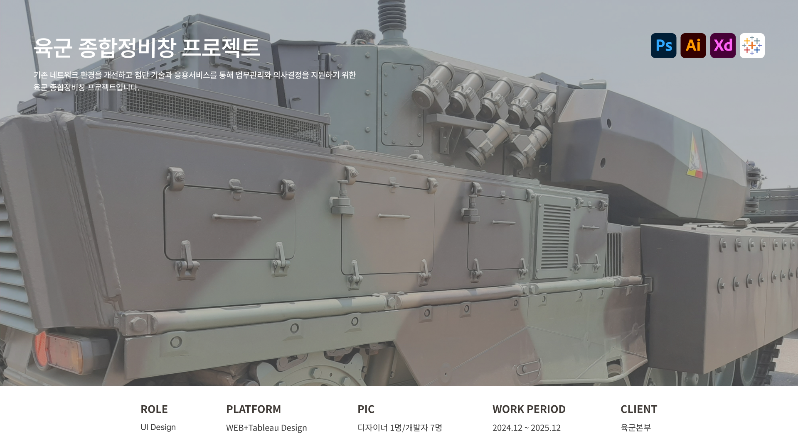

육군 종합정비창 프로젝트

프로젝트 개요
프로젝트 목표
데이터 입력부터 시각화까지 하나의 구조로 연결하여, 사용자가 필요한 정보를 빠르게 탐색하고 확인할 수 있는 환경 구축을 목표로 한다.
디자인 목표
많은 정보를 한눈에 파악할 수 있도록 정보의 시각적 위계를 명확하게 설정하고, 사용자가 새로운 환경에서도 기존에 사용하던 프로그램에서 크게 벗어나지 않도록 하여 일관된 정보와 경험을 제공한다.
프로젝트 타입
사용자 웹/대시보드 연동 기업 내부 서비스
프로젝트 유형
B2B SaaS Platform, UI/UX Design
담당업무
담당 범위
UI 디자인 · 컨셉 시안 제안서 작성 · 디자인 시스템 가이드북 제작 · 클라이언트 소통 · 개발자 협업
대보드 컨셉 시안 제안서 작성
본격적인 프로젝트를 진행하기 앞서 클라이언트가 원하는 방향성을 확보하기 위해 서로다른 컨셉을 기획하여 추상적인 이미지를 구체화해 제공하였습니다.
대시보드 디자인 시스템 가이드북 제작
확정된 시안을 구체화하여 프로젝트 전반의 일관성을 확보하고 UI를 표준화하여 디자인과 개발 사이에 간극을 최소화 하기 위해 제작되었습니다.
웹 UI설계
작업 전 제공된 참고자료를 토대로 클라이언트의 요청사항과 피드백을 반영하여 화면의 구조를 구조적으로 정리하고 운영의 흐름을 원할하게 제공하고자 시각적 위계를 설정하여 필요한 정보를 우선적으로 확인할 수 있도록 설계했습니다.
그 외 클라이언트와 직접 협업하여 요구사항 조율 및 UI설계 반영 및 대시보드 내 사용되는 콘텐츠 제작 및 편집, 개발자와 협업하여 UI 구현 가능성을 조율 외 다수의 업무 진행
*본 프로젝트는 NDA(비밀유지 계약) 및 기업 보안 정책을 준수하기 위해 제작 화면은 공개가 불가능하며, 내용은 일반화 처리되었습니다.
해당 클라이언트, 제작을 담당회사에 저작권이 귀속되어있으며, 기업 제출 목적으로만 사용됩니다.
AI학습·무단 전재·복제 및 외부 배포를 금합니다.
해당 프로젝트는 도중까지 참여하게 되어 디자인 작업 완료시점을 기준으로 작성되었습니다.


© 2026 Leesujin. All rights reserved.